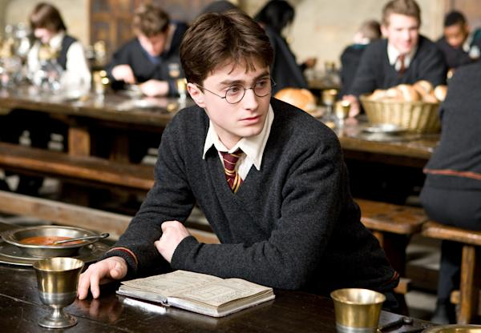
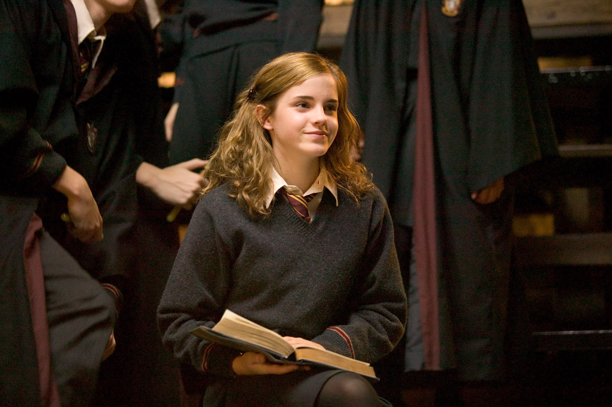
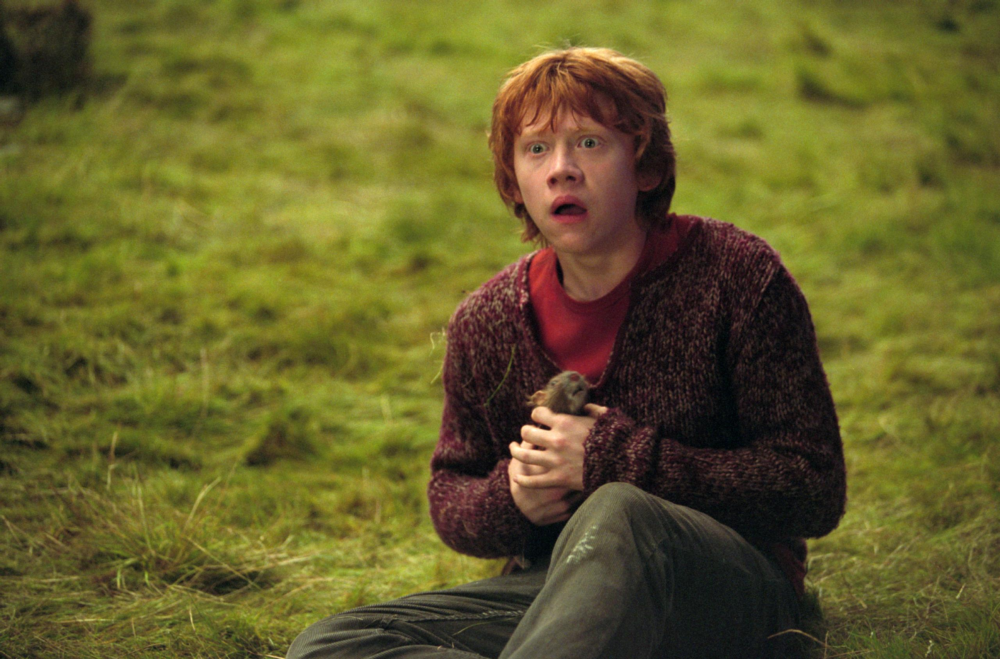
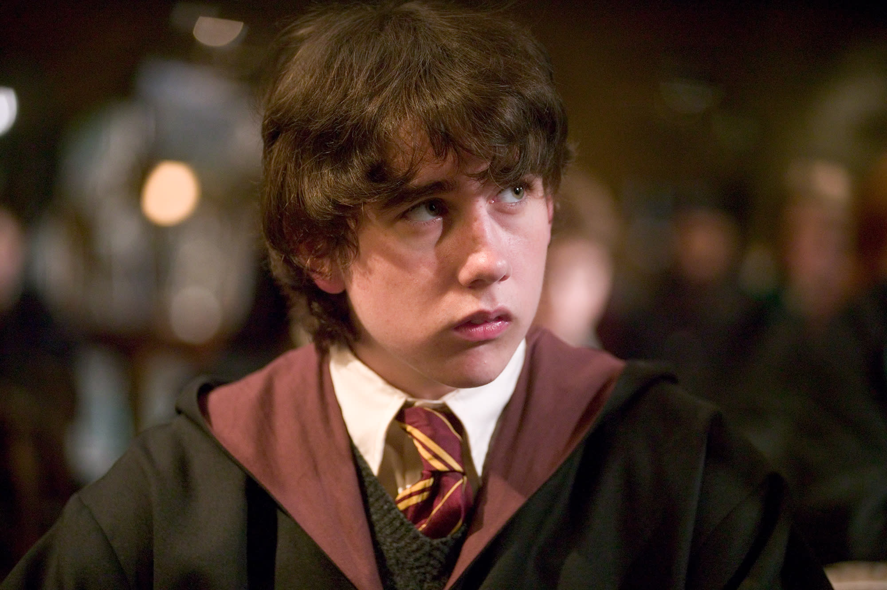
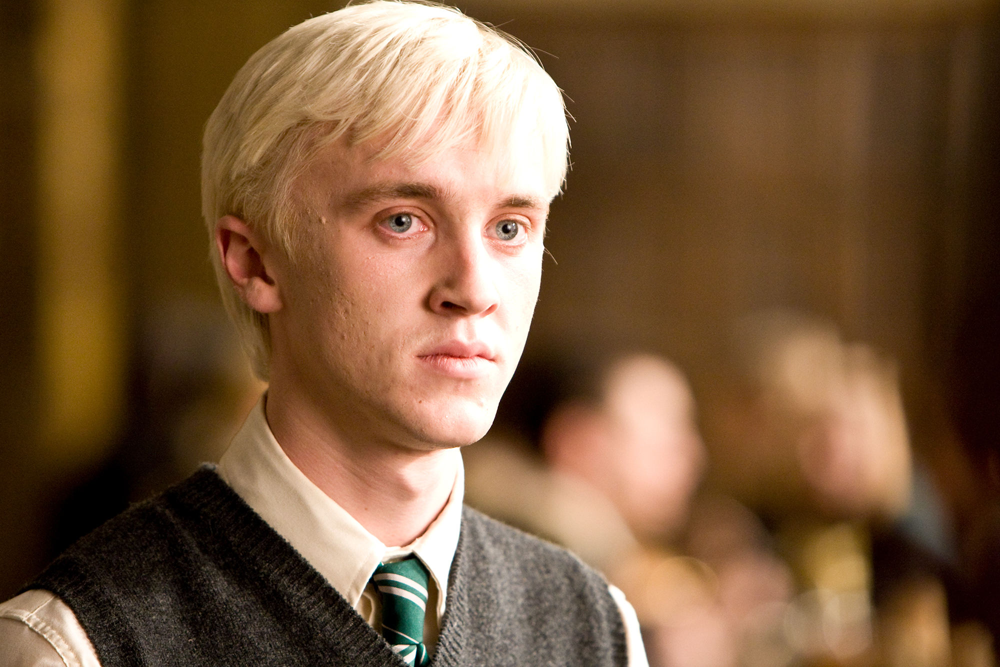
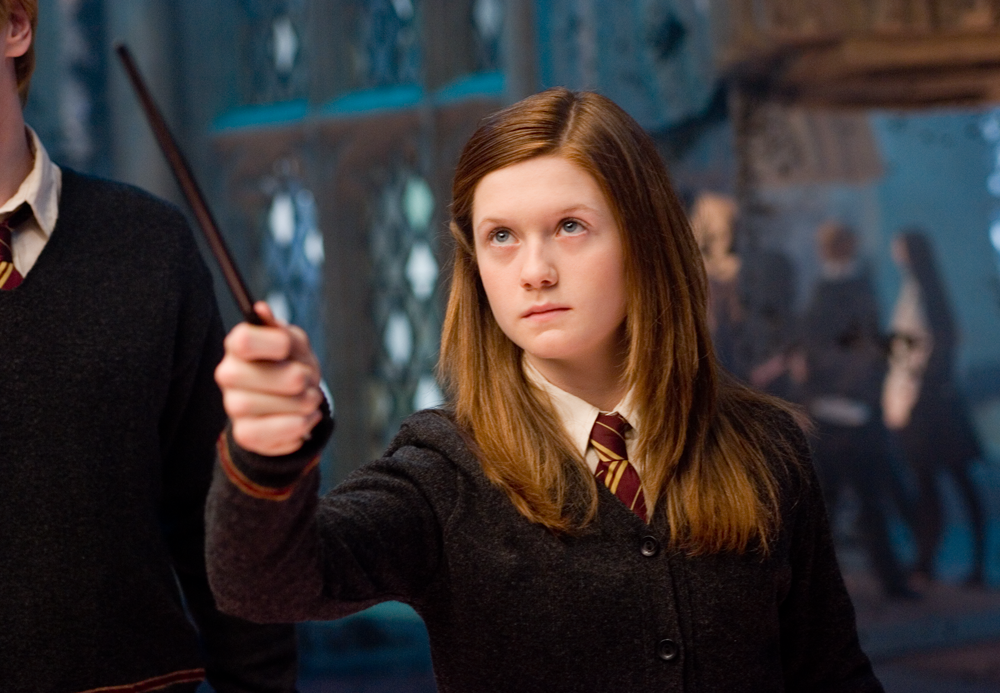

Harry Potter is the fictional protagonist of J.K. Rowling’s best-selling fantasy series, known as the "Boy Who Lived". He is an orphan who discovers on his 11th birthday that he is a wizard. Famous for surviving an attack by the dark wizard Lord Voldemort, Harry attends Hogwarts School of Witchcraft and Wizardry, where he makes friends, learns magic, and battles dark forces

Hermione Granger was the cleverest witch of her age and one of Harry Potter's closest friends. A true Gryffindor, her combination of brains and bravery meant she played a vital role in defeating Lord Voldemort. But there is more to this Muggle-born than just books and cleverness.

Ronald "Ron" Weasley is a fictional character in J.K. Rowling's Harry Potter series, serving as Harry Potter's loyal best friend and a main member of the Gryffindor trio. As the sixth of seven children in a wizarding family, he provides insight into magical culture and provides essential bravery and humor.

Neville Longbottom is a key character in the Harry Potter series, evolving from a timid, clumsy Gryffindor student into a brave leader. As a close ally of Harry Potter and a member of Dumbledore's Army, he famously destroys the final Horcrux, Nagini, during the Battle of Hogwarts, later becoming a Herbology professor.

Draco Malfoy is a major antagonist in J.K. Rowling's Harry Potter series, appearing as a pure-blood Slytherin student in Harry's year. Known as a privileged, cowardly bully, he serves as Harry's main school rival. Draco becomes a Death Eater in his sixth year but struggles with the evil demands, eventually finding redemption

Ginny Weasley is a fictional character in the Harry Potter series, appearing as the youngest child and only daughter of Arthur and Molly Weasley. A talented witch in Gryffindor house, she matures from a shy admirer of Harry Potter into a brave, popular, and skilled dueler.